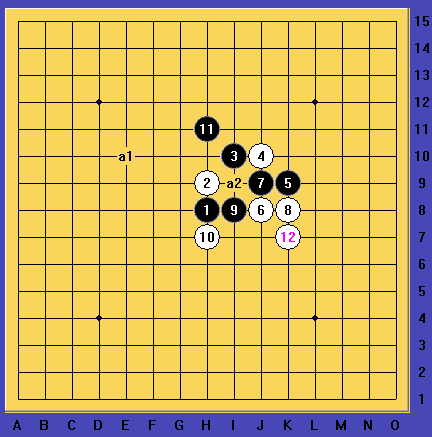

败12.rar
败12.rar［ 逆刃同学于 2014-5-16 17:01:44 时花20金币送鲜花一朵］
败12.rar
发现两套杀，有BUG发图讨论。
［ 健康牛奶同学于 2014-5-16 12:40:28 时花20金币送鲜花一朵］
［ 逆刃 于 2014-5-16 17:03:01 时奖励此帖[金币加 100 威望加1］
［ 趁晨陈尘沉同学于 2014-5-16 19:25:22 时花20金币送鲜花一朵］
［ 趁晨陈尘沉同学于 2014-5-16 19:25:22 时花20金币送鲜花一朵］
［ 趁晨陈尘沉同学于 2014-5-16 19:25:22 时花20金币送鲜花一朵］
［ 趁晨陈尘沉同学于 2014-5-16 19:25:22 时花20金币送鲜花一朵］
［ 趁晨陈尘沉同学于 2014-5-16 19:25:22 时花20金币送鲜花一朵］
这个13时用的是这个17，由于15的原因，最终差个18，不知道能不能地毯；
这个13时用的这个17。
和楼上给出的思路基本一致。
不过楼上确实厉害，楼主我太弱了，对下面跳活三当了中间，这种杀法没搞出来
这个图解释错了，这个13时用的是这个17，由于17当中间的原因，最终差个18，不知道能不能地毯
这个6，用的这个7（继续7手八卦还没有尝试）楼主还差这个最后一个8，其他的都较简单。
此9后还差两个10。
--------------------------------------------------------------------------
不知道有没有对这个5有研究的没，求大神们帮忙，给出后续思路，或者前几手有没有更好的选择。
［ 山城刀客同学于 2014-5-16 22:31:53 时花20金币送鲜花一朵］
［ 山城刀客同学于 2014-5-16 22:31:53 时花20金币送鲜花一朵］
［ 山城刀客同学于 2014-5-16 22:31:53 时花20金币送鲜花一朵］
［ 山城刀客同学于 2014-5-16 22:31:53 时花20金币送鲜花一朵］
［ 山城刀客同学于 2014-5-16 22:31:53 时花20金币送鲜花一朵］
这一路差两个点，拆i9没啥思路。拆g12下图都是唯一
这个还没开始拆，看着那么拥挤，白棋还有个活二，楼主能力有限，搞不动的样子。
----------------------------------------------------------------------
最终还是求助大神搞下这个，或提示思路。。。。
下面白棋原来没作为，这个13搞定了
［ 逆刃同学于 2014-5-18 10:10:50 时花20金币送鲜花一朵］
［ 趁晨陈尘沉同学于 2014-5-18 10:50:54 时花20金币送鲜花一朵］
［ 趁晨陈尘沉同学于 2014-5-18 10:50:54 时花20金币送鲜花一朵］
［ 趁晨陈尘沉同学于 2014-5-18 10:50:54 时花20金币送鲜花一朵］
［ 趁晨陈尘沉同学于 2014-5-18 10:50:54 时花20金币送鲜花一朵］
［ 趁晨陈尘沉同学于 2014-5-18 10:50:54 时花20金币送鲜花一朵］

这个11,12后不好办，地毯可能性不大。
这个11,14后麻烦，也不大可能地毯掉。
这个11,12之后，也不好办呀。
这个11,12之后难局，路漫漫兮。
这个11，下面空间狭窄，也不太可能杀出来。
这个11没什么优势，12之后成了难局。
综上，关于最后这个10，没找到什么思路。
［ 趁晨陈尘沉同学于 2014-5-19 11:52:12 时花20金币送鲜花一朵］
［ 趁晨陈尘沉同学于 2014-5-19 11:52:12 时花20金币送鲜花一朵］
［ 趁晨陈尘沉同学于 2014-5-19 11:52:12 时花20金币送鲜花一朵］
［ 趁晨陈尘沉同学于 2014-5-19 11:52:12 时花20金币送鲜花一朵］
［ 趁晨陈尘沉同学于 2014-5-19 11:52:12 时花20金币送鲜花一朵］
谢刀客的分析。是啊，确实没啥思路可寻。不过我还要再努力一下试试，实在不行就在前面大换血。。。。
原来10楼16之后有黑vct
［ 趁晨陈尘沉同学于 2014-5-19 16:58:34 时花20金币送鲜花一朵］
［ 趁晨陈尘沉同学于 2014-5-19 16:58:34 时花20金币送鲜花一朵］
［ 趁晨陈尘沉同学于 2014-5-19 16:58:34 时花20金币送鲜花一朵］
［ 趁晨陈尘沉同学于 2014-5-19 16:58:34 时花20金币送鲜花一朵］
［ 趁晨陈尘沉同学于 2014-5-19 16:58:34 时花20金币送鲜花一朵］